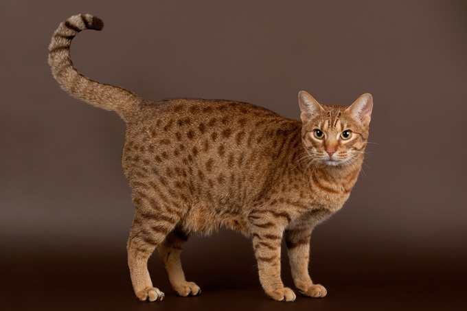
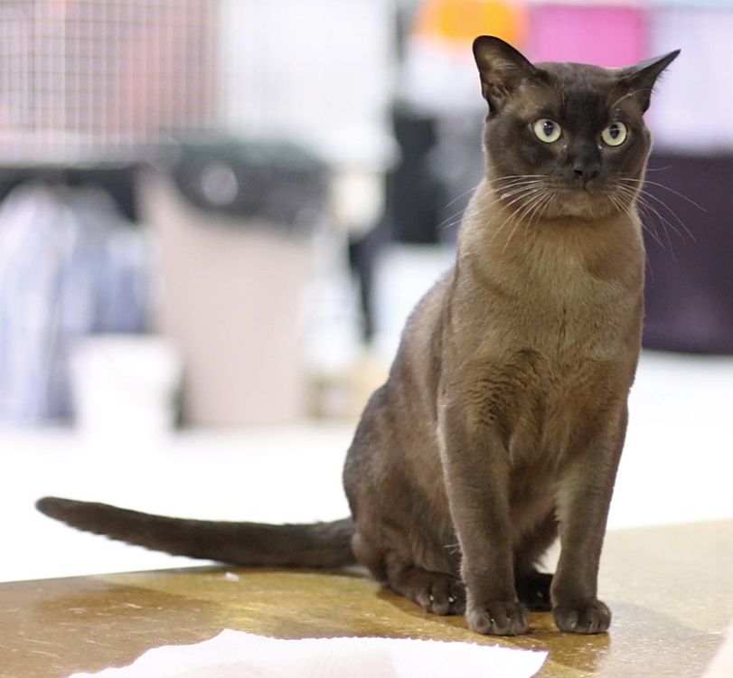
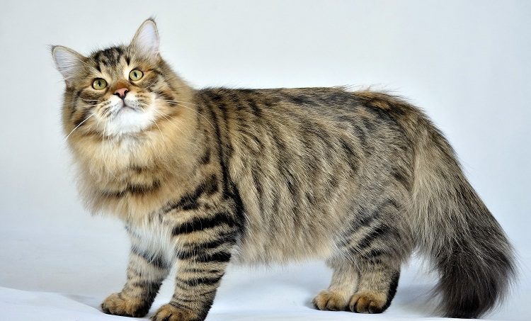
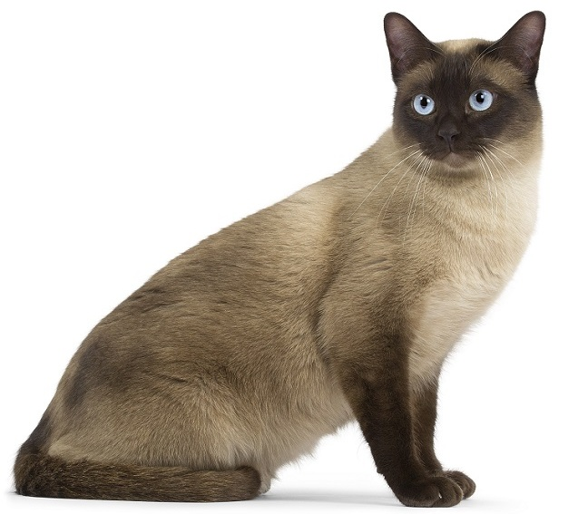
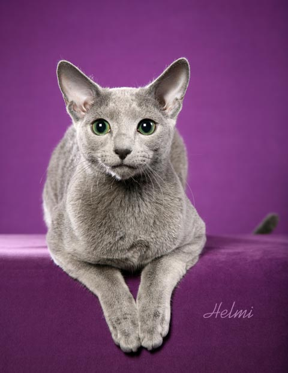
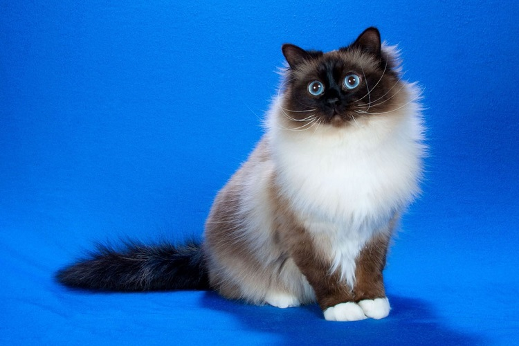
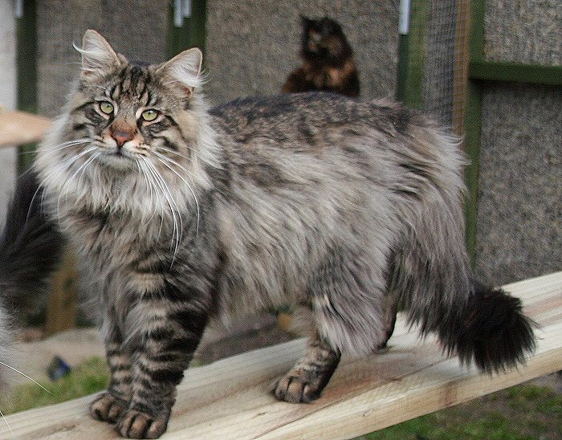
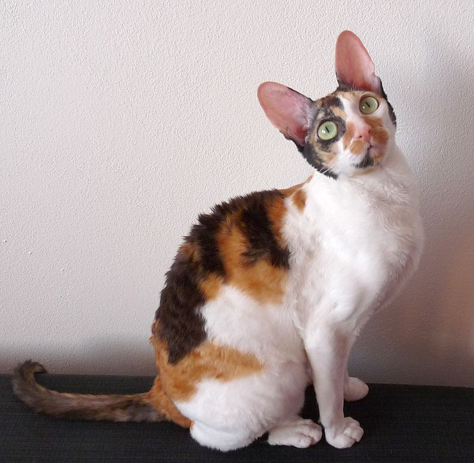
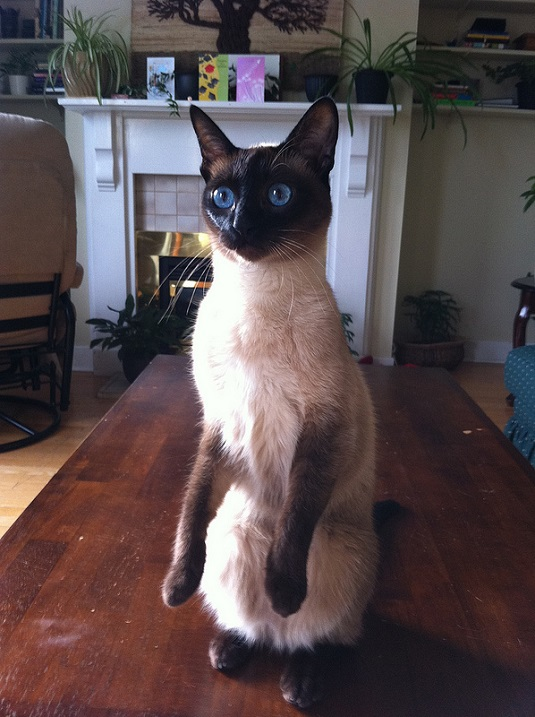
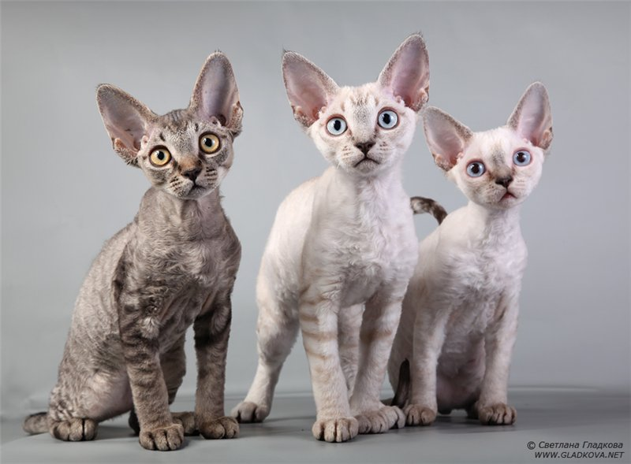

Породы кошек
Ассоциация любителей кошек (англ. Cat Fanciers' Association, сокращенно CFA) ежегодно публикует рейтинги самых популярных пород кошек в мире. Рейтинги составляются по числу регистраций породистых кошек в этой международной организации. На сегодня Ассоциация любителей кошек зарегистрировала более 2 миллионов кошек, принадлежащих к 42-м породам (именно столько пород признает CFA).Очередной рейтинг был опубликован в феврале 2016 года и основан на данных регистраций пород кошек с 1 января по 31 декабря 2015 года. В этой подборке представлены топ-20 самых популярных пород кошек из списка CFA.
Оцикет — порода короткошёрстных кошек, своей окраской напоминают диких млекопитающих оцелотов, из-за чего они и получили название «Кошка-оцелот».
Бурманская кошка (бурма). Короткошерстная порода родом из Юго-Восточной Азии. В Бирме (современное название - Мьянма) таких кошек держали в буддийских храмах и считали реинкарнацией умерших монахов.
Сибирская кошка - известная российская порода полудлиношерстных кошек, получивших свое название благодаря месту своего происхождения - Сибири.
Тонкинская кошка - гибрид сиамской и бурманской кошки американского типа.
Русская голубая. Порода ведет своё происхождение от кошек древних славян.
Бирманская кошка (священная бирма) - порода полудлинношёрстных кошек, которая ведёт своё происхождение из Бирмы (Мьянмы).
Норвежская лесная кошка - порода домашних полудлинношёрстных кошек родом из Норвегии. Предки породы были корабельными кошками на драккарах викингов.
Корниш-рекс. Короткошерстная порода домашних кошек родом из Великобритании.
Сиамская кошка - порода родом из Таиланда (его старое название - Сиам).
Девон-рекс - порода короткошерстных домашних кошек, зародившаяся в Великобритании.